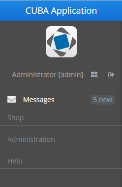
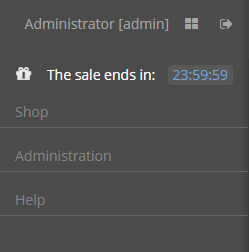

3.5.2.1.40. 侧边菜单
SideMenu 组件提供了定制主窗口布局、管理菜单项、添加图标和标记(badges)以及应用自定义样式的方法。
它也可以像其它可视化组件一样用在任何界面中。要将 SideMenu 组件添加到界面，应该将 xmlns：main ="http://schemas.haulmont.com/cuba/mainwindow.xsd" 命名空间添加到界面描述中。

该组件的 XML 名称： sideMenu
在界面 XML 描述中定义该组件的示例:
<main:sideMenu id="sideMenu"
width="100%"
selectOnClick="true"/>CUBA Studio 为主窗口提供了界面模板，其中包含 sideMenu 组件和侧边面板中的预定义样式：
<layout>
<hbox id="horizontalWrap"
expand="workArea"
height="100%"
stylename="c-sidemenu-layout"
width="100%">
<vbox id="sideMenuPanel"
expand="sideMenu"
height="100%"
margin="false,false,true,false"
spacing="true"
stylename="c-sidemenu-panel"
width="250px">
<hbox id="appTitleBox"
spacing="true"
stylename="c-sidemenu-title"
width="100%">
<label id="appTitleLabel"
align="MIDDLE_CENTER"
value="mainMsg://application.logoLabel"/>
</hbox>
<embedded id="logoImage"
align="MIDDLE_CENTER"
stylename="c-app-icon"
type="IMAGE"/>
<hbox id="userInfoBox"
align="MIDDLE_CENTER"
expand="userIndicator"
margin="true"
spacing="true"
width="100%">
<main:userIndicator id="userIndicator"
align="MIDDLE_CENTER"/>
<main:newWindowButton id="newWindowButton"
description="mainMsg://newWindowBtnDescription"
icon="app/images/new-window.png"/>
<main:logoutButton id="logoutButton"
description="mainMsg://logoutBtnDescription"
icon="app/images/exit.png"/>
</hbox>
<main:sideMenu id="sideMenu"
width="100%"/>
<main:ftsField id="ftsField"
width="100%"/>
</vbox>
<main:workArea id="workArea"
height="100%">
<main:initialLayout margin="true"
spacing="true">
<label id="welcomeLabel"
align="MIDDLE_CENTER"
stylename="c-welcome-text"
value="mainMsg://application.welcomeText"/>
</main:initialLayout>
</main:workArea>
</hbox>
</layout>sideMenu 属性：
-
selectOnClick属性设置为true时，会在鼠标单击时突出显示选中的菜单项。默认值为false。

SideMenu 接口的方法：
-
createMenuItem- 创建一个新菜单项，但不将此项添加到菜单。对于整个菜单，Id必须是唯一的。
-
addMenuItem- 添加菜单项到菜单。
-
removeMenuItem- 从菜单项列表中移除菜单项。 -
getMenuItem- 根据id从菜单树中获取菜单项。 -
hasMenuItems- 如果菜单包含菜单项，则返回true。
SideMenu 组件用于显示菜单项。MenuItem API 允许在界面控制器中创建菜单项。以下方法可用于根据应用程序业务逻辑动态更新菜单项。以编程方式添加菜单项的示例：
SideMenu.MenuItem item = sideMenu.createMenuItem("special");
item.setCaption("Daily offer");
item.setBadgeText("New");
item.setIconFromSet(CubaIcon.GIFT);
sideMenu.addMenuItem(item,0);MenuItem 接口的方法：
-
setCaption- 设置菜单项名称。
-
setCaptionAsHtml- 启用或禁用 HTML 模式的菜单名称。
-
setBadgeText- 设置菜单项的标记文本。标记是显示在菜单项右侧的小部件，例如：int count = 5; SideMenu.MenuItem item = sideMenu.createMenuItem("count"); item.setCaption("Messages"); item.setBadgeText(count + " new"); item.setIconFromSet(CubaIcon.ENVELOPE); sideMenu.addMenuItem(item,0);标记文本可以在 Timer 组件的配合下动态更新：
public void updateCounters(Timer source) { sideMenu.getMenuItemNN("sales") .setBadgeText(String.valueOf(LocalTime.MIDNIGHT.minusSeconds(timerCounter-source.getDelay()))); timerCounter++; }
-
setIcon- 设置菜单项图标。
-
setCommand- 设置菜单项命令，或点击菜单项时要执行的操作。
-
addChildItem/removeChildItem- 添加或移除子菜单的菜单项。
-
setExpanded- 默认展开或折叠包含子菜单的菜单项。
-
setStyleName- 给组件设置一个或多个自定义样式名，并且会覆盖所有已定义的用户样式。多个样式通过空格分隔的样式名列表指定。样式名必须是有效的 CSS class 名称。标准的
sideMenu模板包含一些预定义样式：c-sidemenu-layout、c-sidemenu-panel和c-sidemenu-title。默认的c-sidemenu样式在Halo和Hover这两个主题及它们的扩展主题中支持。
-
setTestId- 调用用于 UI 测试的cuba-id值。
PopupButton 的展示可以使用带 $cuba-sidemenu-* 和 $cuba-responsive-sidemenu-* 前缀的 SCSS 变量进行自定义。可以在创建一个 主题扩展 或者一个 自定义主题 之后在可视化编辑器里修改这些变量的值。
- sideMenu 的属性
-
align - caption - css - description - enable - height - icon - id - selectOnClick - stylename - tabIndex - visible - width
- ftsfield 属性
-
align - caption - description - enable - height - icon - id - stylename - visible - width
- sideMenu 的 API
- menuItem 的 API
-
addChildItem - removeChildItem - setBadgeText - setCaption - setCaptionAsHtml - setCommand - setExpanded - setIcon - setStyleName - setTestId